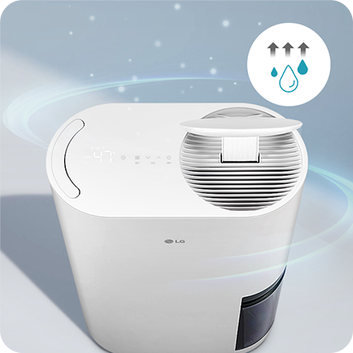
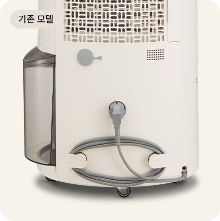
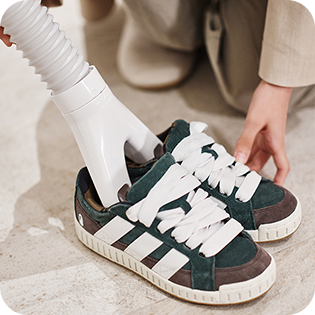
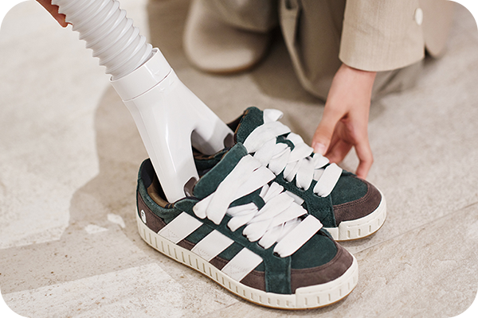

우리 집에 딱 맞는
똑똑한 제습기를 만나면 장마철은 물론
POINT 1
제습 용량
제습기를 고를 때
가장 중요한 포인트는
바로 제습 용량이죠.
가장 중요한 포인트는
바로 제습 용량이죠.
제습 용량은 제습기를 24시간 가동했을 때
제습이 가능한 양을 의미해요.
제습기를 놓을 공간의 면적을 따져
적절한 제습기를 골라 보세요.
제습이 가능한 양을 의미해요.
제습기를 놓을 공간의 면적을 따져
적절한 제습기를 골라 보세요.
-
옷방이나 작은 방제습 용량 13L를
추천 드려요.LG 휘센 오브제컬렉션
제습기·13L -
원룸이나 거실제습 용량 15L, 16L를
추천 드려요.LG 휘센 오브제컬렉션
제습기·15L, 16L -
넓은 공간이나 다용도실, 베란다제습 용량 20L, 21L를
추천 드려요.LG 휘센 오브제컬렉션
제습기·20L, 21L
제습 용량에 대한
궁금증을 해결해드려요.
궁금증을 해결해드려요.
-
Q.
제품 사이즈가 크면 제습 용량도 큰가요?
제품 사이즈가 제습 용량에 영향을 주는 것은
아니에요.
제품 사이즈를 확인하기보다 제품의 실질적인 제습 용량을 먼저 확인하세요. -
Q.
원룸 거주자인데 21L 제습기는 과할까요?
면적에 딱 맞는 제품 대비 더 큰 용량의 제습기를 사용하면 더욱 빠르고 편하게 제습할 수 있어요.
제습 용량이 가장 큰 21L 제품은 어떤 공간에
놓아도 좋습니다.
POINT 2
주요 기능
다양한 기능 중 꼼꼼하게 고려해야 할
대표 기능 3가지를 소개해드려요.
대표 기능 3가지를 소개해드려요.
날로 진화하는 제습기, 제습 용량뿐만 아니라
제습기의 똑똑한 기능까지 체크해 보세요.
제습기의 똑똑한 기능까지 체크해 보세요.
-
살균 및 건조제습기 내부 위생,
관리하기 어렵지는 않나요?물을 통해 습도를 조절하는 제품이기 때문에,
제습기의 내부 위생을 잘 관리할 수 있는지 여부가 중요해요.
LG 휘센 제습기의 경우,
바람을 내보내는 팬을 UV-C를 통해 살균하고
자동으로 내부를 건조하는 기능이 있어요.
위생까지 챙긴다면 UV팬살균과
자동 건조 기능이 있는지 살펴 보세요.UV팬살균제습된 바람을 내보내는
팬을 깨끗하게
UV-C로 세균을
99.99% 살균해요.자동 건조 기능제습이 끝난 후 내부 습기를 자동으로 건조하여
제습기 안까지 청결하게
유지할 수 있어요. -
저소음 제습제습기 가동 시, 시끄럽지는 않을까요?제습기는 장시간 사용하기 때문에,
소음이 얼마나 발생하는지 살펴봐야 해요.
듀얼 인버터 모터를 장착한 LG 휘센 제습기는
도서관(50dB)보다 조용하게 가동할 수 있어요. -
1등급 에너지 소비효율장시간 사용했을 때,
전기세가 많이 나오지 않을까요?1년 내내 사용할 수 있는 제습기니까
에너지 효율이 좋은 제품을 선택하는 게 좋아요.
전기료 부담을 덜어주는
1등급 에너지 소비효율 제품인지 확인해 보세요.
POINT 3
디자인
제습기의 디자인과 편리한 기능도
놓치지 말고 확인해 보세요.
놓치지 말고 확인해 보세요.
2024년 더 감각적으로 변신한 LG 휘센 제습기.
제습기를 구매하기 전 디자인과 세부 기능을
쉽게 비교해 보세요.
제습기를 구매하기 전 디자인과 세부 기능을
쉽게 비교해 보세요.

기존 모델과 신모델,
어떤 점이 달라졌을까요?
어떤 점이 달라졌을까요?
-
크기좁은 공간에도 배치할 수 있도록
신모델의 두께가 기존 모델보다 더 슬림해졌어요.*기존 모델은 20L 기준 크기이며, 신모델은 용량별 크기 동일합니다. -
손잡이쓸 때는 편리하게, 쓰지 않을 때는 깔끔하게.
히든 손잡이로 외관이 더욱 심플해졌어요. -
물통 라이팅투명한 물통에 물이 가득 차면
라이팅이 깜빡거리며 알려드려요.
신모델은 기분에 맞게, 분위기에 맞게
라이팅 색상을 8가지 색상으로 설정이 가능해요. -

-
선 정리 기능제습기를 사용하지 않을 때
기다란 전원 선을 깔끔하게 정리하고 싶잖아요.
신모델에는 선을 별도로 숨길 수 있는
전용 영역이 탑재돼 있어요.
-
이지 휠360도로 매끄럽게 움직이는 바퀴로
힘들이지 않고 제습이 필요한 공간으로
이동할 수 있어요. -
색상깔끔한 화이트 컬러, 고급스러운 베이지 컬러로
2가지 색상 중에서 선택할 수 있어요.
-
크기좁은 공간에도 배치할 수 있도록
신모델의 두께가 기존 모델보다 더 슬림해졌어요.*기존 모델은 20L 기준 크기이며,
신모델은 용량별 크기 동일합니다.손잡이쓸 때는 편리하게,
쓰지 않을 때는 깔끔하게.
히든 손잡이로 외관이 더욱 심플해졌어요.물통 라이팅투명한 물통에 물이 가득 차면
라이팅이 깜빡거리며 알려드려요.
신모델은 기분에 맞게, 분위기에 맞게
라이팅 색상을 8가지 색상으로 설정이 가능해요.선 정리 기능제습기를 사용하지 않을 때
기다란 전원 선을 깔끔하게 정리하고 싶잖아요.
신모델에는 선을 별도로 숨길 수 있는
전용 영역이 탑재돼 있어요.이지 휠360도로 매끄럽게 움직이는 바퀴로
힘들이지 않고 제습이 필요한 공간으로
이동할 수 있어요.색상깔끔한 화이트 컬러, 고급스러운 베이지 컬러로
2가지 색상 중에서 선택할 수 있어요.*신모델의 경우, 카밍 베이지 색상은
21L 옵션으로만 제공됩니다.
LG 휘센 제습기의 디자인
빠르게 비교할 수 있도록
정리해서 알려드려요.
빠르게 비교할 수 있도록
정리해서 알려드려요.
| 기존 모델 | 신모델 | |
|---|---|---|
| 크기 | 신제품 대비 사이즈가 조금 두껍지만 어느 공간에나 잘 어우러져요. |
기존 대비 슬림한 사이즈로 어디든 쏙 들어갈 수 있어요. |
| 손잡이 | 편리하게 제습기를 이동시킬 수 있는 손잡이가 있어요. |
쓸 때만 나타나는 히든 손잡이가 있어요. |
| 물통 라이팅 |
물통 라이팅 색상이 1종이에요. |
물통 라이팅 색상이 8종이에요. |
| 선 정리 | 코드 정리 부품이 외부로 노출되어 있어요. | 히든 코드 수납으로 외관이 더욱 깔끔해졌어요. |
| 이지 휠 | 360도로 움직이며 제습기를 편리하게 이동할 수 있는 바퀴가 있어요. |
|
| 색상 | 에센스 화이트 / 카밍 베이지 | |
TIP
사용 팁
제습기, 200% 활용할 수 있는
방법을 알려드려요.
방법을 알려드려요.
사계절 내내 다양하게 활용하세요.
-
빨래 주변엔 언제나 제습기실내에서 빨래를 말려야 하는 경우가 종종 있죠.
항상 습한 빨래 건조대 주변에 제습기를 놓으면
빨래 건조가 쉬워져요. -
말리기 어려운 캠핑용품 관리까지캠핑용품은 밖에서 사용하니
자주 세척하고 잘 말려줘야 하는데요.
캠핑용품을 관리할 때 제습기를 활용해 보세요. -
습하기 쉬운 옷방 관리를 꼼꼼하게옷에 습기가 남아 있으면 불쾌함이 찾아오기 쉽죠.
옷방이나 옷장 주변에서 제습기를 꾸준히 사용해
의류 관리를 해보세요. -
겨울철 결로도 제습기로겨울철 실내 온도 차로 생기는 습기도
제습기로 싹 잡아 보세요.
결로로 인한 곰팡이 걱정을 덜 수 있어요.
별도로 구매 가능한 키트를 통해,
용도에 딱 맞게 활용할 수 있어요.
용도에 딱 맞게 활용할 수 있어요.
-
-
 
-
*제습기 24년 모델의 경우 집중건조키트는 별매이며,
공기청정키트는 제습기 전 모델 별매입니다.
(집중건조키트 : 연장호스, 신발건조키트, 옷장건조키트, 호스 어댑터)
공기청정키트는 제습기 전 모델 별매입니다.
(집중건조키트 : 연장호스, 신발건조키트, 옷장건조키트, 호스 어댑터)
자주 묻는 질문(FAQ)
-
Q1.
제습기는 어떤 원리로 가동되나요?
제습기를 가동하면 실내의 습기가 제습기로 빨려 들어가는데요.
제습기에 모아진 습한 공기는 증발기와 응축기를 통해 냉각되었다가 발열됩니다.
불쾌지수를 높였던 우리 주변의 습한 공기가 제습기 하나면 건조한 공기로 변한다고 할 수 있죠.
냉각 과정에서 발생한 물은 제습기의 물통에 고스란히 남는 걸 볼 수 있을 거예요. -
Q2.
제습기에서 나오는 바람의 온도는
몇 도인가요?실내 온도와 습도에 따라 토출되는 바람의 온도는
조금씩 다릅니다.
대략적으로 주변 온도가 27℃ 라면 제습 중 토출되는 온도는 38~41℃ 수준입니다.
일반적으로 실내 온도가 낮아지는 만큼 토출 온도도 함께 낮아 지는데요.
예를 들어, 실내 온도가 10℃ 낮아지면 토출 온도는 10℃ 정도 낮아 집니다.
가을, 겨울에 제습기를 쓰면 제습량이 줄고 바람의 온도도 미지근하거나 송풍으로 느껴지는 까닭이죠.
제습기의 토출 온도가 낮다고 느껴지더라도 걱정하지 않아도 됩니다.
물통에 물이 고인다면 정상적으로 제습기가 제 역할을 하고 있다는 신호입니다. -
Q3.
습도를 어느 정도로 설정해야 적당한가요?
사람이 가장 상쾌하고 시원하다고 느끼는 온도는 약 20℃, 습도는 약 50~60%라고 해요.
단, 같은 습도라 하더라도 주변 온도에 따라 습도가 높다고 느낄 수도 건조하다고 느낄 수도 있습니다.
실내 온도가 22℃ 이상이라면 습도 40~60%, 18~21℃ 라면 습도 45~65%,
17℃ 이하라면 습도 50~70% 를 추천 드릴게요. -
Q4.
필터 청소 방법 및 교체 주기는
어떻게 되나요?필터 교체 방법
제습기 뒷면에 있는 먼지망을 왼쪽 또는 오른쪽 방향으로 당겨서 빼주세요.
모델에 따라 필터가 빠지는 방향이 다르니 꼭 체크하세요.필터 청소 방법
먼지망은 오염이 심한 경우 물로 세척 후 건조해서 사용해 주세요.
※ 공기청정용 부가 필터는 물 세척이 되지 않으니 먼지만 제거 후 사용해 주세요.